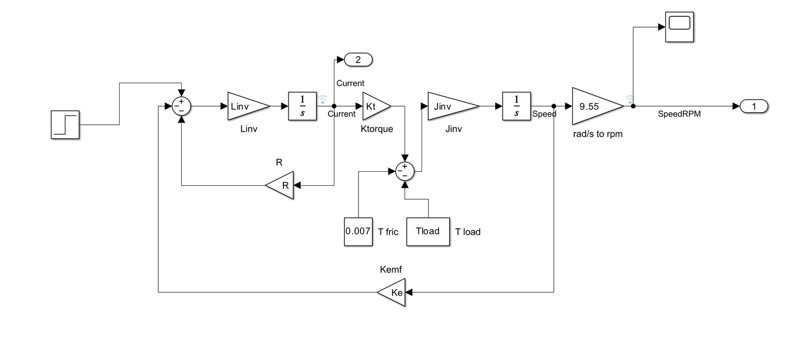
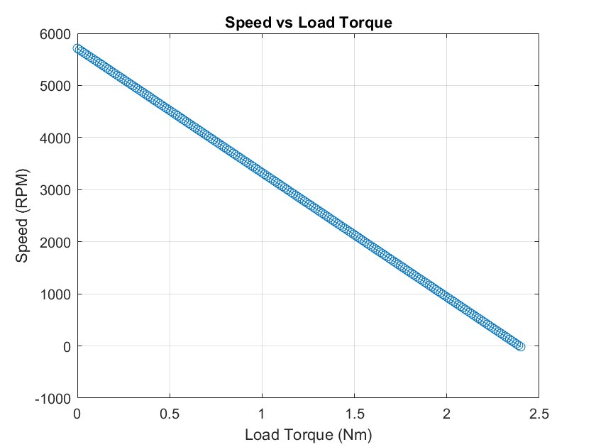
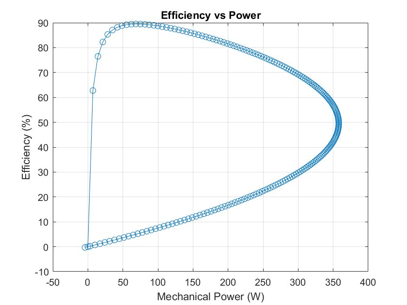
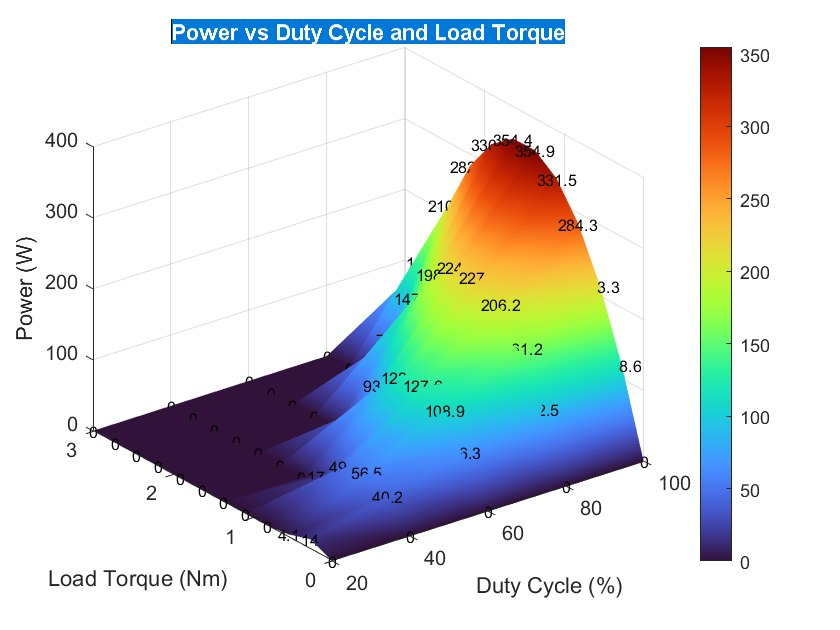
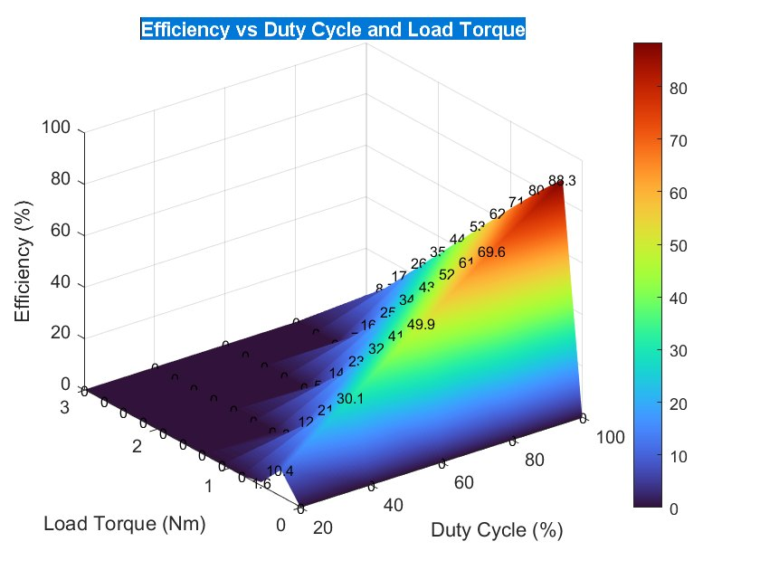
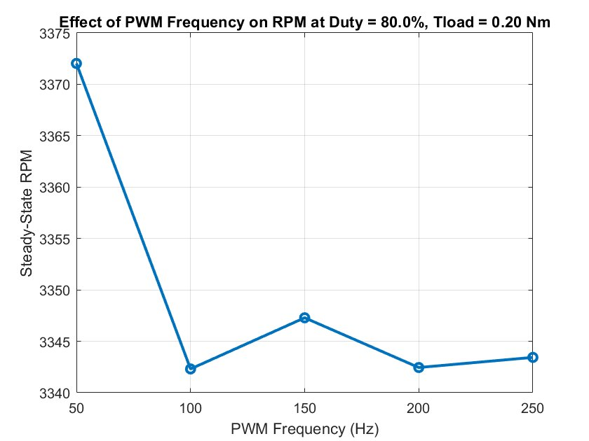
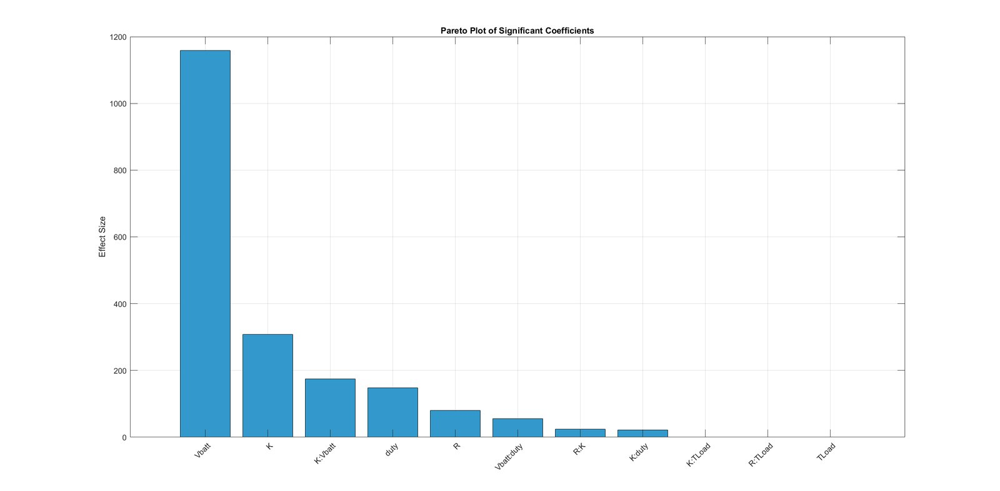
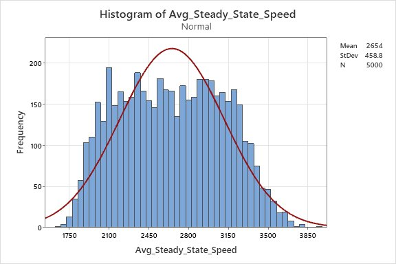
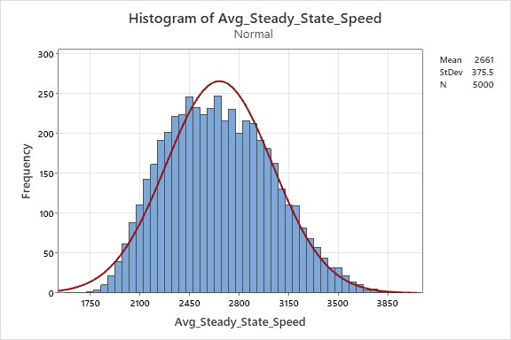

01
Motor model
Electrical and mechanical equations built in Simulink, then swept across load torque and PWM duty cycle.






02
Which parameters matter
A designed experiment and response-surface fit ranked the motor parameters. Battery voltage and the torque constant dominate steady-state speed.

03
Tolerance study
A 5,000-sample Monte Carlo run showed how part tolerances spread motor speed. Re-allocating the tolerances with an optimizer cut the spread while keeping cost reasonable.
Result460 → 375 RPM speed standard deviation, before and after; 5,000 Monte Carlo samples.

